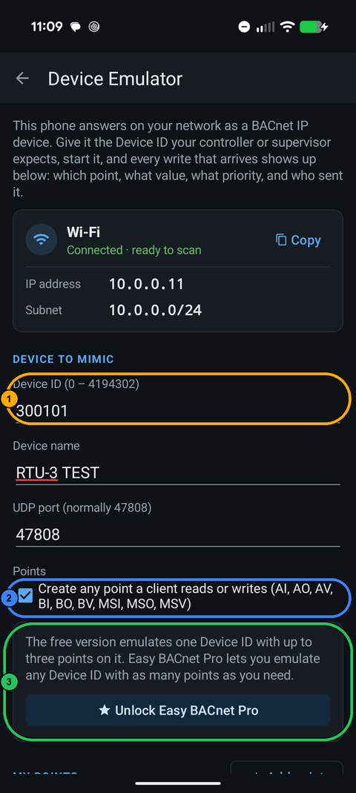
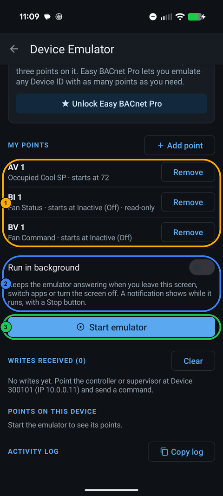
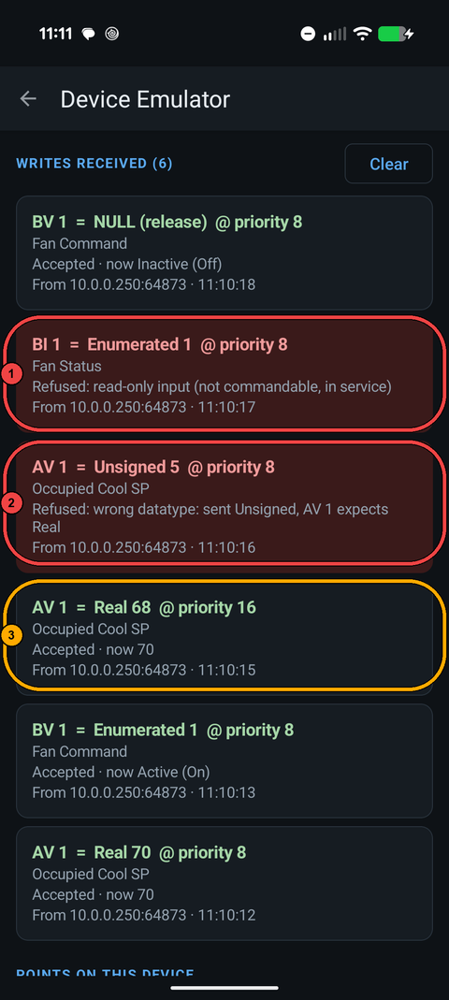

How do I check whether a BMS or controller is really writing to a BACnet device?
Updated 19 November 2026
Make something answer as that device and watch what arrives. Easy BACnet's Device Emulator mode turns your phone into a BACnet IP device with the Device ID you choose. Start it on the controls network, let the supervisor or controller send its commands, and each WriteProperty shows up on the phone: which point, what value, at what priority, from which IP address, and whether it was accepted or refused and why. If nothing shows up, the commands are not leaving the supervisor, or not reaching that Device ID.
When this helps
- “Is the BMS actually sending the command?” The equipment isn't responding and everyone blames someone else. If the writes land on the emulator, the supervisor side is doing its job and the problem is at the equipment or its controller.
- Before the equipment arrives. The integrator can map and test the head-end against the Device ID the new unit will have, and see the exact points and priorities it writes.
- Checking a mapping. A write to the wrong instance number, or a setpoint sent as the wrong data type, is obvious in the write log.
Step 1 — Set up the device
Get the phone onto the controls network the same way you would for a scan (see how to use Easy BACnet), open the app and tap the Device Emulator card. Fill in:
- Device ID (0 to 4194302): the ID the supervisor expects.
- Device name: anything that makes it obvious, for example
TEST RTU-3. - UDP port: leave it at 47808 unless the site uses another (which port?).
- Points: the simplest choice is Create any point a client reads or writes, so whatever the supervisor touches (AI, AO, AV, BI, BO, BV, MSI, MSO, MSV) appears on its own. You can also set up your own under My points (type, number, name, starting value, writable or not), so the device already has the points the supervisor expects when it connects.
The free version emulates one Device ID with up to three points, which covers the usual “is the start/stop and the setpoint arriving?” check. Easy BACnet Pro emulates any Device ID with as many points as you need.
Tap Start emulator. The screen shows the Device ID, the phone's IP address and port, and live counts of Who-Is requests, reads and writes.


- Left, 1: the Device ID the supervisor expects. 2: create any point a client touches. 3: the free version: one Device ID, up to three points.
- Right, 1: your own points (here a setpoint, a fan command and a read-only fan status). 2: Run in background. 3: Start emulator.
Don't run two devices with the same ID. If the real controller is still on the network, mimicking its Device ID creates a duplicate Device ID and the supervisor may write to either one. Disconnect or power down the real device first, or test with a spare ID the supervisor is mapped to. Stop the emulator when you are done.
Step 2 — Let the supervisor find it
Most head-ends find a device with a Who-Is and bind to whoever answers with an I-Am for that ID; the emulator answers like a real device, and the Who-Is count goes up when it is asked. If the head-end has the real device's IP address stored instead, it keeps sending to that address: re-discover the device or point it at the phone's IP. The phone has to be on the same subnet as the supervisor, or reachable by IP through the router.
Step 3 — Read the write log
Every write appears under Writes received as soon as it arrives:
- The point and value, with the data type it was sent as.
- The priority it was written at. A write that carries no priority lands at 16, the lowest, which is a common reason a command “does nothing” on the real equipment (see priority and stuck overrides).
- Who sent it: the sender's IP address and port, and the time.
- Accepted or refused. A refused write is shown in red with the reason, for example the wrong data type for that object. A real controller would refuse it the same way.

- 1: a write to a read-only input, refused: “read-only input”.
- 2: a setpoint sent as the wrong data type, refused with the reason.
- 3: a write with no priority lands at 16. It was accepted, but the point still reads 70 because priority 8 holds it. This is the classic “the BMS sent it and nothing happened”.
Points on this device shows each point's current value and which priority is commanding it, and the activity log can be copied to paste into a report or an email.
Leaving it running
By default the emulator stops when you leave the screen, so nothing keeps answering as that device by accident. For a longer capture, turn on Run in background: the phone keeps answering with the screen off and shows a notification with the live counts and a Stop button.
What it doesn't do
- It doesn't run the equipment's program. Values change only when something writes them, so it shows what the supervisor sends, not how the real unit would react.
- WritePropertyMultiple requests are logged and then refused; supervisors that use it normally fall back to single writes.
- It is a BACnet IP device. It can stand in for an MS/TP controller only from the IP side, not on an RS-485 trunk.
Check it on your own network. Easy BACnet is a free BACnet IP scanner and explorer for Android. Find devices, read and write points, build remotes and control panels, or let the phone stand in as a device to see what the BMS sends.
Get it on Google Play